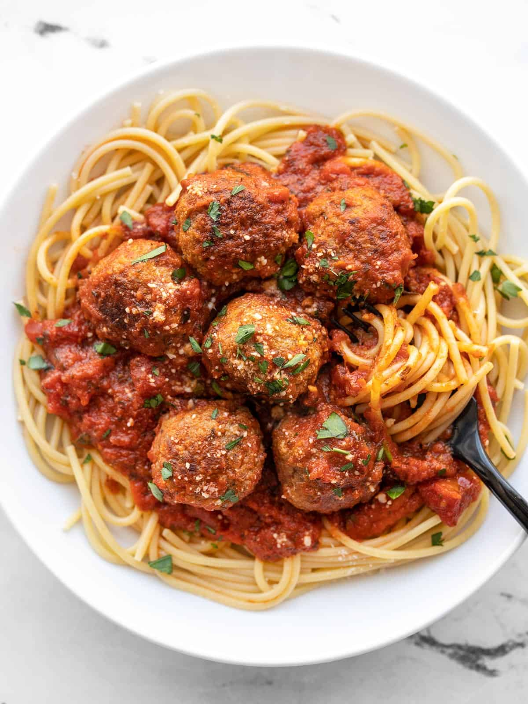

Meatballs

Description
his homemade meatball recipe is super simple, pared-down, and basic for when you need something fast, easy, and uncomplicated. The other advantage to keeping these meatballs simple is that it makes them more versatile! Because the flavor profile is simple, you can pair these meatballs with a variety of sauces and meals.
Ingredients
- 1/2 cup plain bread crumbs
- 1/2 cup grated parmesan
- 1/2 tsp garlic powder
- 1/2 onion powder
- 1/2 tsp Italian seasoning
- 1/4 tsp salt
- 1/4 tsp pepper
- 2 large eggs
- 1/4 cup whole milk
- 1 lb. bulk Italian sausae
- 1 lb. ground beef
Steps
- In a small bowl, combine the breadcrumbs, Parmesan, garlic powder, onion powder, Italian seasoning, salt, and pepper. In a separate small bowl, lightly whisk the two eggs.
- Add the breadcrumb mixture, eggs, milk, Italian sausage, and ground beef to a large bowl. Use your hands to mix the ingredients together until evenly combined. Avoid over mixing the meat.
- Let the meatball mixture rest for five minutes to allow the breadcrumbs time to soften. Divide and shape the meat into about 32 meatballs, approximately 2 Tbsp in volume each.
- Preheat the oven to 400ºF. Line a baking sheet with parchment. Place the meatballs on the baking sheet about one inch apart from each other.
- Bake the meatballs for about 15 minutes, or until lightly browned.
- Transfer the meatballs to a pot of red sauce and simmer for five more minutes in the sauce. If not using a red sauce, add an additional 3-5 minutes to the bake time, or until the meatballs are cooked through.